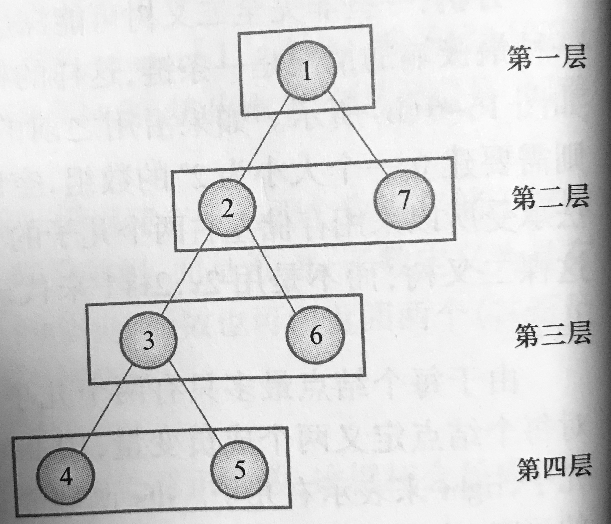
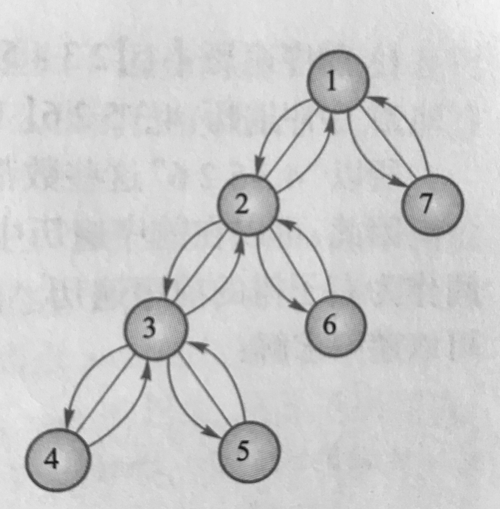

数据结构基础—树
树作为一种基本的数据结构，不管是在各类信息学，还是在各种系统、工程问题中使用都十分广泛。但是时间有限，不能将其讲的面面俱到，目前掌握基础的常用做法就可，而信息学中二叉树的使用较为频繁。
二叉树的建立与编号
计算机是人类发明的，因此所有相关的原理我们都可以相较其他自然学科更好的推测理解。
建立和记录一颗二叉树的信息我们有很多种方式，只要合理且对场景使用就是最好的方式。下面来介绍几种常见的方式，后面的题目中你也能见到它们各自的应用。
- 数组实现二叉树信息存储与索引
当前节点为\(u\), 将其左右子节点信息存储在\(tree[2*u]\)和\(tree[2*u+1]\)中。但是这种方式耗费空间较大，若二叉树深度为\(n\)，则需要建立大小为\(2^n\)的数组，会耗费较大的空间，尤其是当树退化成一条链的时候
当前节点为\(u\), 将其左右子节点信息存储在\(left[u]\)和\(right[u]\)中
结构体数组实现二叉树信息存储与索引，例如：
struct node { int left, right; }tree[maxn];指针实现二叉树信息索引，例如：
struct node{ int v;//结点值 node *left, *right; };
以洛谷-P4913 二叉树深度为基础例子说明，在后面的题目中会有不同的做法并附上详细的解释
方法一：
/*
当前节点为u, 使用2*u, 2*u+1分别表示左右子节点
二叉树深度为n，则需要建立大小为2^n的数组, 需要较大的空间
*/
#include <iostream>
using namespace std;
const int maxn = 1e6+100;
int tree[2*maxn];
int n, ans;
void dfs(int u, int deep) {
if(u==0) return; //到达叶子节点时返回
ans = max(ans, deep);//更新答案
dfs(tree[2*u], deep+1);//向左子树遍历
dfs(tree[2*u+1], deep+1);//向右子树遍历
}
int main() {
cin >> n;
//读入数据并建树
for(int i = 1; i <= n; i++)
cin >> tree[2*i] >> tree[2*i+1];
dfs(1, 1); //从1号节点出发，当前深度为1
cout << ans << endl;
}
方法二：
/*
使用结构体node来表示当前节点存储的信息
*/
#include <iostream>
using namespace std;
const int maxn = 1e6+100;
struct node {
int left, right;
}tree[maxn];
int n, ans;
void dfs(int id, int deep) {
if (id==0) return ;
ans = max(ans, deep);
dfs(tree[id].left, deep+1);
dfs(tree[id].right, deep+1);
}
int main() {
cin >> n;
for(int i = 1; i <= n; i++)
cin >> tree[i].left >> tree[i].right;
dfs(1, 1);
cout << ans << endl;
}二叉树的层次遍历
从根节点开始，按照一层层的顺序从左到右遍历输出所有节点的遍历方式就叫做二叉树的层次遍历，如下图：

二叉树的层次遍历通过队列可以实现，以UVA-122 Trees on the level为例说明：
#include<iostream>
#include<string.h>
#include<stdio.h>
#include<vector>
#include<queue>
using namespace std;
const int maxn = 256+5;
char s[maxn];//保存读入的节点
bool failed;
struct node{
bool have_value;//是否被赋值过
int v;//结点值
node *left, *right;
node(): have_value(false), left(NULL), right(NULL){} //构造函数初始化
};
node *root;
void remove_tree(node* u){
if(u==NULL) return ;
remove_tree(u->left);//递归释放左子树的空间
remove_tree(u->right);//
delete u;
}
node* newNode(){
return new node();
}
void addNode(int v, char* s){
int n = strlen(s);
node* u = root;//从根节点往下走
for(int i = 0; i < n; i++){ //找到当前位置
if(s[i]=='L'){
if(u->left==NULL) u->left = newNode(); //节点不存在 建立新节点
u = u->left;
}
else if(s[i]=='R'){
if(u->right==NULL) u->right = newNode();
u = u->right;
}
//忽略其他情况，即最后多余的那个右括号
}
if(u->have_value) failed = true;//已经赋过值 表明输入有误
u->v = v;//给节点赋值
u->have_value = true;//标记已经赋值
}
//读入字符
bool read_input(){
failed = false; //记录是否输入有误
//输入新数据时原先的内存不会再使用，从专业角度来说最好释放内存空间以防止内存泄漏
//内存泄漏指程序中已动态分配的堆内存由于某种原因程序未释放或无法释放，造成系统内存的浪费，导致程序运行速度减慢甚至系统崩溃等严重后果
remove_tree(root);
root = newNode();//创建根节点
while(1){
if(scanf("%s",s)!=1) return false;//整个输入结束
if(!strcmp(s,"()")) break;//读到结束标志 退出循环
int v;
sscanf(s+1,"%d", &v);//读入节点值
addNode(v, strchr(s,',')+1);// strchr函数功能为在一个串中查找给定字符的第一个匹配之处
}
return true;
}
/*
这样一来 输入和建树部分就已经结束了 接下来只需要按照层次顺序遍历这棵树
此处使用一个队列来完成这个任务 初始时只有一个根节点 然后每次取出一个节点
就把它的左右子结点放入队列中
*/
bool bfs(vector<int>& ans){
queue<node*> q;
ans.clear();
q.push(root);//初始时只有一个根节点
while(!q.empty()){
node* u = q.front(); q.pop();
if(!u->have_value) return false; //有节点没有被赋值过 表明输入有误
ans.push_back(u->v); //增加到输出序列尾部
if(u->left!=NULL) q.push(u->left);
if(u->right!=NULL) q.push(u->right);
}
return true;
}
int main(){
while(read_input()){
vector<int> ans;
if(failed||(!bfs(ans))) printf("not complete\n");
else{
printf("%d", *it), it++;
for(it; it!=ans.end(); it++)
printf(" %d",*it);
printf("\n");
}
}
}为什么结点有时要用指针实现？
使用数组或是指针来进行索引，功能上是等同的。
但如果用数组表示，会有一个问题：
数组是在定义时候确定大小，并且以后无法改变的；如果在编制程序之初无法确定有多少个节点，怎么办？
而指针在使用上则更为简单。因此，具体的设计中，会倾向于使用指针。
而二叉树并不一定要用指针实现，作为OI或者ACM选手，使用数组对于我们来说更加的方遍。接下来，把指针完全去掉。首先还是给每个结点编号，但不是按照从上到下从左到右的顺序，而是按照结点的生成顺序。用计数器cnt表示已存在的
结点编号的最大值，因此newnode函数需要改成这样：
const int root = 1;
void newtree() {
left[root] = right[root] = 0;
have_value[root] = false;
cnt = root;
}
int newnode(){
int u = ++cnt;
left[u] = right[u] = 0;
have_value[root] = false;
return u;
}上面的newtree()是用来代替前面的remove_tree(root)和root = newnode()两条语句的。由于没有了动态内存的申请和释放，只需要重置结点计数器和根结点的左右子树了。
当然这题还有一种更妙的方式：若当前节点为str，其左右子节点的信息存到mp[str+"L"]和mp[str+"R"]中：
/*
二叉树的层次遍历
ref:
https://gist.github.com/OmarSRehan/eebe2ab5659324bf7052189d8adb7633
*/
#include <cstdio>
#include <cstring>
#include <string>
#include <iostream>
#include <algorithm>
#include <map>
#include <queue>
using namespace std;
map<string,int> mp;
/*
类似把第i个节点的左右子树信息存到tree[2*i]和tree[2*i+1]中
这里把名称为str节点左右子树的信息存到mp[str+"L"]和mp[str+"R"]中
*/
int cnt, res[310];
//层次遍历
void bfs(string root){
queue<string> q;
q.push(root);
while(!q.empty()) {
string cur = q.front(); q.pop();
//若找到对应的结点则将其子节点放入队列
//(3, L), (4, R)
if (mp.find(cur)!= mp.end()){
res[++cnt] = mp[cur];
q.push(cur+"L");
q.push(cur+"R");
}
}
}
int main(){
string s;
while(cin>>s){
if(s!="()"){ //(11, LL)
int i = 1;
string r, t = "";
while(s[i]!=',') t += s[i], i++;
r = s.substr(i+1, s.length()-i-2);
if(mp.find(r)==mp.end()) mp[r] = stoi(t);
else mp["X"] = 0; //标记一个节点被多次赋予一个值
}
else {
cnt = 0, bfs("");
if(cnt==mp.size()){
cout << res[1];
for(int i = 2; i <= cnt; i++)
cout << " " << res[i];
}
else cout << "not complete";
cout << endl;
mp.clear();
}
}
}二叉树的深度优先遍历
给定任意节点，可以访问该节点本身、遍历左子树、遍历右子树，这就叫做如二叉树的深度优先遍历，如下图所示：

根据在某个节点中比哪里的顺序不同，有以下3种遍历方式：
- 中序遍历： 左子树-> 根结点 -> 右子树
（先访问左子树，再访问根节点，后访问右子树，而对于每个子树来说，又按照同样的访问顺序进行遍历） - 先序遍历： 根结点 -> 左子树 -> 右子树
- 后序遍历： 左子树 -> 右子树 -> 根结点
根据三种遍历的特性，递归的算法很容易就能写出来：
//先序
void PreOrder(node *root){
if (root==NULL) return;
else {
printf("%d", root->data);
PreOrder(root->lch);
PreOrder(root->rch);
}
}
//中序
void InOrder(node *root){
if (root==NULL) return;
else {
InOrder(root->lch);
printf("%d", root->data);
InOrder(root->rch);
}
}
//后序
void PostOrder(node *root){
if (root==NULL) return;
else {
PostOrder(root->lch);
PostOrder(root->rch);
printf("%d", root->data);
}
}利用二叉树的深度优先遍历我们可以做到很多事情，如由两种遍历确定一颗二叉树、求二叉树的高度等等，这里以UVA-548 Tree说明上述两种应用：
需注意的是，必须要有中序，否则无法确定，例如前序+后序，此时无法确定这颗树是何种形态：
A 和 A
/ \
B B/*
后序+中序确定一颗二叉树
*/
#include<string>
#include<iostream>
#include<sstream>
#include<algorithm>
#define inf 0x3f3f3f3f
using namespace std;
//因为各个结点的权值各不相同且都是正整数，直接用权值作为结点编号
const int maxv = 10000+10;
int n, in_order[maxv], post_order[maxv];
int lch[maxv], rch[maxv];
bool read_list(int *a) {
string order;
if(!getline(cin, order)) return false;
stringstream ss(order);
n = 0;
int x;
while(ss>>x) a[n++] = x;
return true;
}
//把in_order[L1..r1]和post_order[l2..r2]建成一棵二叉树，返回树根
int build(int l1, int r1, int l2, int r2) {
if(l1>r1) return 0; //空树
int root = post_order[r2];
int p = l1;
while(in_order[p]!=root) p++;
int cnt = p-l1; //左子树的结点个数
lch[root] = build(l1, p-1, l2, l2+cnt-1);
rch[root] = build(p+1, r1, l2+cnt, r2-1);
return root;
}
int best, best_sum; //目前为止的最优解和对应的权和
void dfs(int u, int sum) {
sum += u;
if(!lch[u]&&!rch[u]) { //叶子
if(sum<best_sum||(sum==best_sum&&u<best)) {
best = u;
best_sum = sum;
}
}
if(lch[u]) dfs(lch[u], sum);
if(rch[u]) dfs(rch[u], sum);
}
int main(){
while(read_list(in_order)){
read_list(post_order);
build(0, n-1, 0, n-1);
best_sum = inf;
dfs(post_order[n-1], 0);
cout << best << "\n";
}
}这题需要特别注意输入，否则会TLE，需要使用getline()来判断是否到文件末尾
总结
关于树的建立、层次遍历、深度优先遍历的基本概念和应用讲解完毕，将来这些思想还会在图或者其他类型题目上有更深的应用，有了这些基础将来可以自行探索。